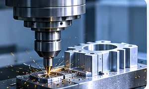

Обробка матеріалів
Дослідіть закономірності, змініть параметри моделі та запропонуйте власне рішення.

Коротка теорія
Точіння, свердління й фрезерування знімають шар матеріалу різальним інструментом. Швидкість різання, подача й глибина визначають режим обробки. Надмірні режими можуть погіршити якість і ресурс інструмента.
Які теми навчальної програми поєднано?
- Обробка матеріалів різанням
- Металорізальні верстати
Години — сумарні за програмою, а не тривалість одного заняття.
1. Сформулюйте гіпотезу
Як змінюється теоретична швидкість різання за збільшення обертів шпинделя?
2. Додаткова модель і спостереження
Змінюйте параметр повзунком. Зафіксуйте щонайменше три значення та поясніть тенденцію.
3. Конструктор дослідження
Перейдіть усіма етапами та визначте, що Ви робитимете на кожному.
Етап 1/5: Проблема
4. Перевірте себе
Яка операція створює круглий отвір?
5. Інженерний мініпроєкт
Складіть технологічну послідовність виготовлення металевої втулки з отвором.
Ваші записи автоматично зберігаються у цьому браузері.
Підсумковий звіт
PDF міститиме гіпотезу, спостереження, ідею проєкту та поточний результат моделі.
У вікні друку виберіть «Зберегти як PDF».